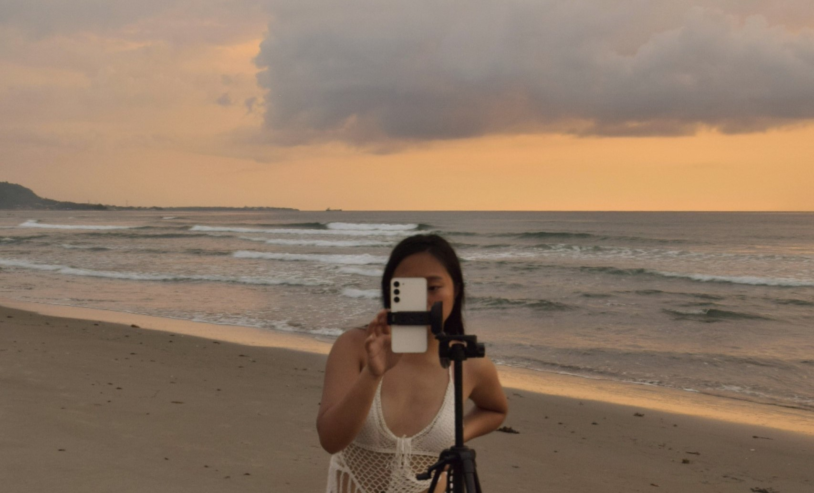
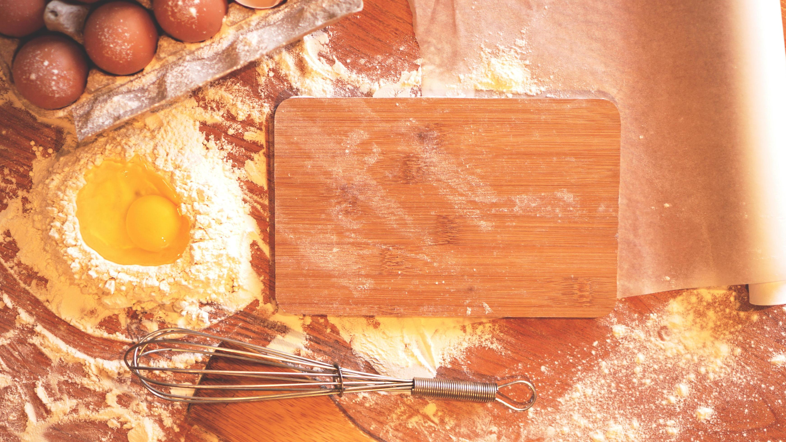

Discover some of my favorite hobbies and interests that keep me engaged and inspired:
-

Learning & Playing Instruments
Music has always been a passion of mine, and learning new instruments is something I truly enjoy. I’ve been practicing the guitar and keyboard, and each day I discover something new about the art of making music. Playing an instrument is a creative outlet that allows me to express emotions, relax, and challenge myself to improve my skills. It’s also a way to connect with others through shared musical experiences, whether it's playing for friends or joining a jam session. I love how music can bring joy and inspire creativity.
-

Watching Korean Dramas
One of my go-to ways to relax is watching Korean dramas. I’m captivated by the intricate storylines, deep emotions, and the visual beauty of each series. Whether it’s a romantic comedy or an action-packed thriller, K-dramas provide an escape from the everyday routine. I enjoy analyzing the character development, fashion, and cultural nuances present in the shows. Plus, watching Korean dramas helps me improve my language skills while indulging in some quality entertainment.
-

Learning Foreign Languages
Learning foreign languages has always fascinated me. I believe that languages are more than just words; they are windows into new cultures and ways of thinking. Currently, I'm focusing on improving my Korean and Japanese, and I enjoy practicing through apps, music, and conversations with native speakers. Learning a new language challenges my mind, enhances my memory, and provides opportunities for me to connect with people from different backgrounds. It’s a rewarding hobby that continually broadens my understanding of the world.
-

Outdoor Recreational Activities
I love spending time outdoors and engaging in various recreational activities. Hiking through scenic trails, camping under the stars, and exploring nature’s beauty are some of my favorite ways to unwind and recharge. Being outside not only keeps me active but also allows me to connect with the environment and appreciate the simple joys of life. Whether it's trekking through mountains, swimming at a nearby lake, or taking a peaceful walk in the park, I find solace in the natural world and value every moment spent in it.
-

Photography
I have a deep appreciation for photography, as it allows me to capture and preserve moments in time. Whether it's landscapes, candid shots of people, or detailed close-ups, I enjoy exploring the world through a camera lens. Photography enhances my creativity and challenges me to see beauty in everyday life. It’s a way for me to tell stories without words, and I love experimenting with different angles, lighting, and perspectives to create unique images.
-

Cooking and Baking
Cooking and baking have become creative outlets for me where I can explore different cuisines and recipes. I love experimenting with new ingredients and techniques, whether it's trying my hand at making Korean dishes or perfecting my baking skills with pastries and cakes. Cooking is a relaxing activity that also gives me a chance to share meals with friends and family, adding a personal touch to gatherings.